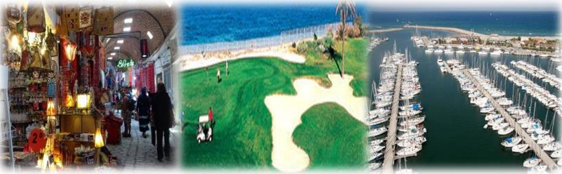

The ATSIP Executive Committee is pleased to announce the 8th IEEE ATSIP edition, International Ranked Conference on Advanced Technologies, Signal and Image Processing, ATSIP'2027. The conference provides a high-level international forum for researchers, engineers and scientists from around the world to present and discuss recent advances and applications. It features world-class speakers, plenary sessions, business and industrial exhibits, and poster sessions.

ATSIP conference ranking: CORE database — portal.core.edu.au/conf-ranks/2231/ · Every edition since 2014 is published by IEEE and indexed in IEEE Xplore.
Topics
Main topics, with sub-topics, include but are not limited to:
Medical signal/image & Computer Aided Diagnosis
Habib BENALI (CAN) & Khalil CHTOUROU (TUN) & Lamia SELLAMI (TUN)
IoT & Embedded Systems, RF Applications
Mohamed ATRI (KSA) & Mohamed GHORBEL (TUN) & Ahmed KAFFEL (USA)
Remote Sensing and Assimilation
Mehrez ZRIBI (FRA) & Imed R. FARAH (TUN) & Abdelaziz KALLEL (TUN)
New Technologies for Communications Networking
Riadh ABDELFATTEH (TUN) & Christophe GROVA (CAN) & Abd. TOUMI (FRA)
Image & Video, Speech & Audio Processing
Rachid JENNANE (FRA) & Sofia BEN JEBARA (TUN) & Mondher FRIKHA (TUN)
Big Data, Cloud Computing Applications
Naoufel KRAIM (KSA) & Mohamed FARAH (TUN) & Ali DOUIK (TUN)
AI for Advanced Technologies
Bhiksha RAJ (USA) & Zied LACHIRI (TUN) & Najoua BEN AMARA (TUN)
Advanced Technologies for Security
Gérard CHOLLET (FRA) & Mounir SAYADI (TUN) & Ali ALGARNI (KSA)
Paper submission
Authors are invited to submit full-length papers of no more than six pages including results, figures and references, in IEEE conference format. Papers are accepted only through the conference submission system, cmt3.research.microsoft.com/ATSIP2027. Submissions must be original and must not have been published previously or be under consideration for publication elsewhere while being evaluated for this conference. Accepted and presented papers will be submitted for inclusion in IEEE Xplore.
Templates (Word and LaTeX): ieee.org/conferences/publishing/templates.html · template-selector.ieee.org — use the A4 variant.
Selected papers, best papers
Best papers will be awarded and extended in order to be submitted as special issues of international journals.
Special sessions, round tables
Besides regular sessions, special sessions are an important part of the technical programme, promoting an environment that fosters discussion and collaboration on specific topics of interest. Proposals give the session title, a short rationale, the organisers and their affiliations.
Important deadlines
| Submission of regular papers | 30 March 2027 |
| Notification of paper acceptance | 1 May 2027 |
| Revised paper upload deadline | 15 May 2027 |
| Author's registration deadline | 30 May 2027 |
| Conference | 30 June – 3 July 2027 |
Venue and organisation
ATSIP'2027 is held in Sousse, Tunisia, from 30 June to 3 July 2027, organised by the ATISP laboratory (ENET'Com, University of Sfax) with the ATSI association and the IEEE Tunisia Section. Venue and accommodation details are published on the conference website.
More information: atsip-conference.github.io · atsip.conf@gmail.com
The Microsoft CMT service was used for managing the peer-reviewing process for this conference. This service was provided for free by Microsoft and they bore all expenses, including costs for Azure cloud services as well as for software development and support.